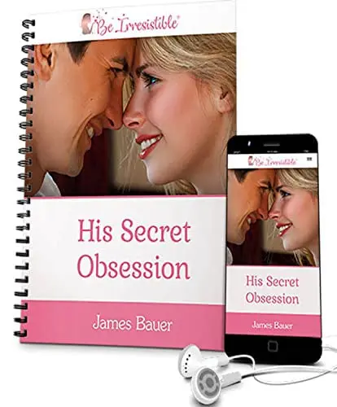

Mobirise.comHis Secret Obsession Book By James Bauer
His Secret Obsession is a popular relationship guide created by James Bauer, designed to help women understand what truly drives a man’s emotions and commitment. The program focuses on a psychological concept called the “Hero Instinct,” which explains why men are naturally drawn to feeling needed, respected, and valued in a relationship.
It provides practical advice, real-life examples, and ready-to-use phrases that can help improve communication and emotional connection with a partner. One of the key highlights is the famous “12-word text,” a simple message technique claimed to trigger a man’s attention and deepen his attraction.
It is especially helpful for women who:
✅Feel ignored or undervalued in a relationship
✅Want to rekindle love with their partner
✅Are trying to understand male psychology better
Overall, His Secret Obsession is positioned as a step-by-step relationship blueprint to help create stronger, more meaningful romantic connections.
This program truly transformed my relationship. Once I understood my partner’s emotional needs—especially through the Hero Instinct technique—everything shifted. We’re more connected, our communication has improved, and our bond feels stronger than ever. If you want to build a deeper emotional connection and lasting love, I can’t recommend His Secret Obsession enough!
His Secret Obsession went way beyond what I expected. The insights into how men think and what they really need emotionally were eye-opening. The step-by-step guidance made it so easy to build a deeper bond. Now, my partner is more loving, more committed, and I feel truly secure in our relationship. If you want to improve your love life, this is a must-try!
This program completely transformed my relationship. The insights into male psychology were truly eye-opening, and the techniques helped us connect on a much deeper emotional level. We’re now communicating better, understanding each other more, and feeling closer than ever before. I’m so grateful for His Secret Obsession—it’s been a total game-changer for our love life!

His Secret Obsession is a powerful relationship guide created by well-known expert James Bauer. This program reveals what really drives men in relationships—and how understanding their emotional needs can help you build a stronger, more passionate connection.
Backed by years of research, His Secret Obsession gives women clear, practical strategies to improve communication, create lasting intimacy, and overcome common relationship challenges. At the heart of the program is a unique approach that focuses on the “Hero Instinct”—a deep, natural drive in men that, when triggered the right way, strengthens their emotional bond with you.
Whether you're starting a new relationship or want to bring the spark back to an existing one, this guide shows you how to connect with your partner on a whole new level. You'll learn how to tap into his emotional world, meet his unspoken needs, and build a relationship based on trust, passion, and real connection.
If you’re looking for a proven way to create a loving, lasting relationship, His Secret Obsession might be exactly what you need. Thousands of women have already transformed their love lives with this program, and now it’s your turn.
His Secret Obsession is a groundbreaking relationship program by expert James Bauer, built around a powerful concept known as the Hero Instinct—a man’s deep emotional need to feel needed, respected, and important in the life of his partner. When this instinct is activated the right way, men naturally become more committed, emotionally invested, and deeply connected.
This program is designed for women who want to strengthen their relationships, improve emotional closeness, and inspire long-term devotion. By understanding male psychology and how to trigger the Hero Instinct, you’ll learn how to communicate in a way that truly speaks to a man’s heart.
One of the standout features of His Secret Obsession is the 12-Word Text—a simple but powerful phrase that can instantly capture a man’s attention and spark emotional intimacy. Along with this, the program includes specific words, actions, and behaviors that make a man feel appreciated, respected, and drawn closer to you.
These techniques are easy to apply in everyday life. Whether you’re trying to reconnect with your partner, deepen an existing bond, or navigate relationship challenges, this step-by-step guide gives you the tools to do it with confidence and clarity.
James Bauer also teaches the power of subtle communication—using body language and tone to express admiration and appreciation. These small gestures can activate a man’s natural desire to love, protect, and commit more fully.
What makes His Secret Obsession truly special is its focus on authentic connection. The strategies aren’t about manipulation—they’re about helping both partners feel seen, valued, and emotionally fulfilled. It’s about building a foundation of trust, passion, and lasting love.
Whether you're dating, in a long-term relationship, or trying to rebuild after distance or conflict, His Secret Obsession offers practical, proven tools to transform your love life—and bring you closer to the man you love.
➤His Secret Obsession is a powerful relationship guide designed to help women create deeper, more meaningful connections with the men they love. Based on proven psychology, this program introduces practical strategies that tap into the Hero Instinct—a man’s natural drive to protect, provide, and feel truly needed in a relationship.
➤When you activate this instinct the right way, something shifts. He feels more emotionally connected, starts prioritizing you, and becomes more invested in the relationship—leading to stronger bonds, deeper commitment, and long-lasting love.
➤This program also helps improve communication by giving you real insight into how men think and feel. You’ll learn how to speak his emotional language, reduce misunderstandings, and create a smoother, more harmonious relationship dynamic.
➤One of the program’s biggest strengths is its focus on emotional fulfillment. By understanding what men really need to feel secure and appreciated, you’ll be able to build loyalty, spark passion, and inspire lifelong devotion.
➤You’ll also discover tools like the Glimpse Phrase and Fascination Signal—powerful triggers that help reignite attraction and emotional intimacy. Whether you're starting something new or trying to bring back the spark in a long-term relationship, His Secret Obsession offers tailored solutions that work at every stage of love.
➤More than just tips and tricks, this program gives you real confidence in your love life. It’s about understanding men on a deeper level and using that knowledge to connect authentically—with clarity, trust, and emotional honesty.
➤If you're looking to restore a lost connection, strengthen your current bond, or simply understand how to make a man fall deeply and genuinely in love, His Secret Obsession is your step-by-step guide to lasting relationship success.
His Secret Obsession is the creation of James Bauer, a well-known relationship coach and dating expert with years of hands-on experience helping women build stronger, more fulfilling relationships. Known for his practical, psychology-based advice, James has helped thousands of women around the world better understand men and improve their love lives.
At the heart of this program is James’s most powerful concept: the Hero Instinct. This simple but game-changing idea explains a man’s deep emotional need to feel important, needed, and respected in a relationship. When a woman learns how to trigger this instinct in the right way, it can lead to deeper emotional connection, lasting commitment, and real devotion.
James created His Secret Obsession to make these insights easy to understand and apply—no matter your background or relationship status. The program tackles common relationship struggles like emotional distance, miscommunication, and fading intimacy, giving you step-by-step guidance to bring closeness and passion back into your love life.
From powerful tools like the 12-Word Text to proven communication techniques, His Secret Obsession is packed with practical advice that actually works in real-life situations.
More than just a relationship guide, James Bauer’s teachings encourage women to embrace their self-worth and build genuine, healthy connections. His expert approach combines psychology with everyday strategies to help you attract, understand, and deeply connect with the man you love.
If you’re looking for a trusted, expert-designed program to create a stronger and more loving relationship, His Secret Obsession offers the roadmap—straight from one of the best in the field.
His Secret Obsession isn’t just another relationship guide—it’s based on real psychological principles that explain how men think, feel, and connect emotionally. At the core of the program is the Hero Instinct, a concept drawn from evolutionary psychology. This theory suggests that men have a deep, natural desire to feel needed, respected, and essential in a relationship. When this instinct is triggered, it creates a powerful emotional connection that leads to stronger loyalty and commitment.
The Hero Instinct centers on a man’s need to feel like he makes a difference in his partner’s life. When he feels appreciated and irreplaceable, he becomes more emotionally invested. This emotional fulfillment builds a deeper bond and encourages him to protect and prioritize the relationship. His Secret Obsession teaches women how to activate this instinct through subtle actions, words, and gestures that resonate deeply with the male psyche.
James Bauer, the creator of the program, combines insights from multiple branches of psychology—including evolutionary, behavioral, and communication psychology. Evolutionary psychology explains why men feel most connected when they’re fulfilling a purpose. Behavioral psychology reveals that men often respond more to how they’re made to feel rather than what’s said. Communication psychology then ties it all together by showing women how to express appreciation and admiration in ways men truly understand.
One of the most powerful tools in the program is the 12-Word Text, designed to instantly grab a man’s attention and trigger emotional attraction. Alongside this, techniques like the Glimpse Phrase and Fascination Signal are used to reignite passion and emotional closeness—especially useful if you’re in a long-term relationship or trying to reconnect after distance.
Another reason His Secret Obsession stands out is its practical, real-life application. The techniques aren’t just theories—they’re simple steps you can use in everyday conversations and interactions. Whether you’re trying to rebuild trust, improve communication, or spark deeper intimacy, the program guides you with clear, actionable advice that actually works.
Above all, His Secret Obsession emphasizes emotional authenticity. It’s not about playing games—it’s about building real connection, trust, and mutual respect. By understanding what drives men at their core, women can create lasting love that feels genuine, safe, and deeply fulfilling.
If you’re looking to strengthen your relationship, restore emotional closeness, or inspire deeper commitment from your partner, this program offers a science-backed, step-by-step path to success.
▪️ Effective Emotional Bonding: Fosters deep emotional connections by tapping into the Hero Instinct.
▪️ Actionable Strategies: Provides practical and easy-to-follow techniques that can be applied immediately.
▪️ Helps Rekindle Passion: Offers tools to reignite emotional attraction and passion in relationships.
▪️ Customizable for Different Relationship Stages: Tailored advice for new, long-term, and commitment-seeking relationships.
▪️ Psychologically Backed Techniques: Strategies based on evolutionary and behavioral psychology.
▪️ Promotes Authentic Connections: Encourages genuine communication, trust, and understanding in relationships.
▪️ Primarily Available Only Through the Official Website: This ensures that you are getting the genuine program directly from the source, which guarantees authenticity and the latest updates.
▪️ Available Only Online: The online format makes it easily accessible from anywhere, but it may require internet access, which could limit access in some remote areas. However, the convenience of having the program online allows for flexible, on-demand learning.
▪️ Might Challenge Comfort Zones: The techniques encourage stepping out of your comfort zone to improve communication and emotional intimacy. While this can be challenging, it promotes growth and deeper connections in relationships.
We're confident that His Secret Obsession will transform your romantic life. To ensure your satisfaction, we offer a 60-day money-back guarantee. If you're not thrilled with the results, just contact us within 60 days for a full refund. You'll keep the program, so you have access to its insights whenever you need them. Your satisfaction is our priority. Get His Secret Obsession with 76% Off.
The Hero Instinct is a concept developed by relationship expert James Bauer. It’s the idea that men have a deep, primal drive to feel needed, respected, and important in a relationship. When this instinct is triggered, a man feels emotionally fulfilled, which leads to greater love, commitment, and devotion. His Secret Obsession teaches women how to activate this instinct in a genuine and natural way.
Yes! The program is designed to be simple, practical, and easy to understand. Whether you're new to relationship advice or have tried other guides before, His Secret Obsession breaks down each concept into actionable steps. It comes in both eBook and audio format, so you can learn at your own pace—anytime, anywhere.
Absolutely. His Secret Obsession offers techniques that are perfect for both new and long-term relationships. If you’re feeling emotional distance, a loss of connection, or fading passion, the strategies in this program can help you reignite attraction and rebuild emotional closeness—even after years together.
Once you purchase His Secret Obsession, you’ll get instant access to both the digital eBook and the audio version. You can read or listen on your phone, tablet, or computer—whichever is most convenient for you. The materials are easy to download and access anytime.
Unlike generic dating advice, His Secret Obsession is rooted in real psychological research—especially the concept of the Hero Instinct. It focuses on emotional triggers that work at a deeper level, helping you create lasting love and genuine emotional intimacy. The techniques are subtle, powerful, and designed to work in real-world situations—no games, no manipulation, just clear guidance that builds stronger connections.
Your online privacy is one thing you can be sure we so much prioritize here and thus do not worry about losing any sensitive credentials while making your purchase His Secret Obsession supplement from us. Besides, you can Click Bank excellent reputation and vast experience in online transactions to help you in safeguarding your purchase.
According to the team of experts who created His Secret Obsession the manufacturers have come up with an amazing refund policy. So, as you buy any of the above-mentioned packages, you will be provided with a great 60-day 100% money-back guarantee.
If in any case this His Secret Obsession does not work for you or if you’re unsatisfied with the effects of the formula for any reason, then you are entitled to a complete refund with no questions asked.
Email: support@hisecretobsession.com
Mobirise.com